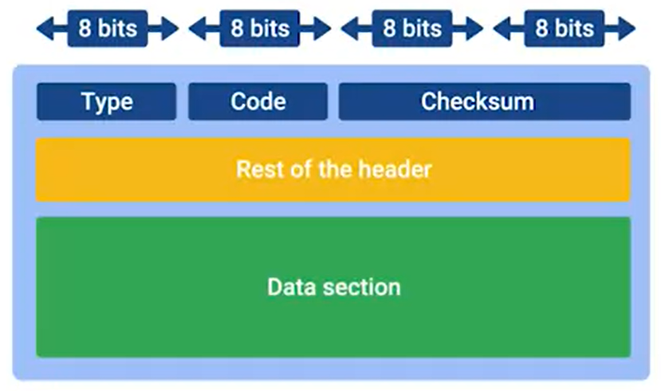

many programs and protocols have error detectionand error recovery
CRC - cyclic redundancy check - should match the data payload
ICMP - internet control messege protocol - used to communicate issues, routers or remote hosts will use it with the origin address to send error msg
structure is simple, has header with few fields and data section to figure out what transmition generated the error

type - what type of msg is delivered, eg - destination unreachable or time exceeded
code- more specific reason for the msg of the type - eg for destination unreachable - can be network unreachable or port unreachable
rest of header - optionaly used to send more data
data section - the payload - telling the origin which transsmition caused the error
ICMP wasnt developed to humans to interact with
but there is a tool and 2 msg types importent:
ping - special type of ICMP msg called echo request, if destination is avialable it will send back echo reply